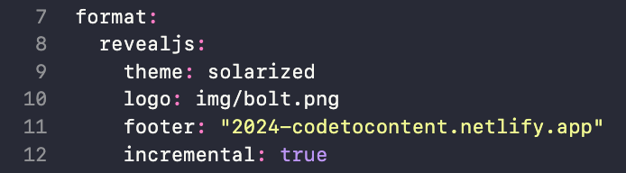
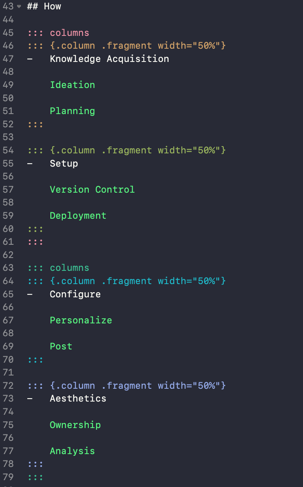
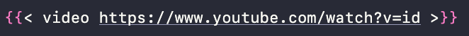

Code to Content Lighting Talk 2
In this post are the materials for my Cascadia R Conference lightning talk called: Code to Content.

Slides
Below is the interactive slide deck. You can click through the slides using your arrow pad or the navigation menu.
Talk
Slide 1: Code to Content
Hello, my name is Randi Bolt. Since rendering my first R markdown file to HTML in 2021, I have been enhancing my technical skills by creating web pages and blogs. Today in my talk, “Code to Content,” I will be discussing the benefits and process of data blogging.
Slide 2: Agenda
Today I will be covering four main points:
Why you should start a blog, where I’ll share key reasons and benefits.
How to create a blog, where I’ll outline the high-level steps to get you started.
What to consider, where I’ll provide important tips and advice.
Where to find more information, where I’ll give you valuable resources for further exploration.
The images I’ve included are examples of my past related projects, from R Markdown on GitHub to blogdown with Hugo templates, and now Quarto.
Let’s get into it!
Slide 3: Why
To begin, let’s discuss some of the reasons why someone might embark on their blogging journey. There is joy in expression and self discovery. This can help cultivate a richer process of understanding, confidence, and purpose. Own your narrative, and find yourself more empowered speaking to the work you have done and own. Continuous Growth and Learning, which is crucial in today’s job market. Reveal fresh perspectives, and find you’re able to solve problems more efficiently. Data advocacy and empowerment, which are crucial elements driving informed decision-making, fostering transparency, and allow more people the opportunity to leverage this knowledge and these tools. Lastly it is embedded in R culture, and the principles of collaborative learning.
These blog posts illustrate my journey, from humble drawings and cheat sheets to web scraping and package building. Blogging provides a low-stakes way to share work and remember key techniques.
Continuing on,
Slide 4: How
When it comes to how to create a blog there are a variety of approaches. At a high level start by gathering the necessary knowledge, brainstorm your blog’s focus, and plan your content. Then set up your blog, connect it to a version control system like Git, and deploy it on a platform such as Netlify. From there configure your blog with a .yam file, personalize it with unique pages, and publish your first post. Then style the aesthetics of your blog with an .scss file, take ownership by securing a custom URL, and use Google Analytics to track and analyze user engagement.
Now that you have a high level understanding of the process let discuss what to focus on and away from.
Slide 5: What
When it comes to creating a blog, it is not always easy to know what to prioritize. First and foremost, prioritize accessibility to ensure your content is available to everyone. Select the right tool for the job to suit your specific needs and skills. Avoid duplicating other profiles by creating unique, original content. Finally, always consider your audience to make sure your blog resonates with them and meets their needs.
The images on this slide provide examples of these priorities in action. They illustrate how I’ve used different tools, ensured accessibility, organized content for my audience, and maintained originality without duplicating other profiles.
Now that we’ve covered what to focus on, let’s look at some resources to help you get started.
Slide 6: Where (1/2)
To start, read the Quarto documents for starting a blog. This is a one page scrollable document that should be a fairly quick read. From there I’d check out “Quarto/RMarkdown - What’s Different” by Ted Laderas to not only understand the difference between these two tools, but also learn a lot of the extra capabilities of Quarto. When it comes to creating your first Quarto blog, Bea Milz’s post, “Creating a blog with Quarto in 10 steps,’ is an essential guide to the process.
Slide 7: Where (2/2)
Once you’ve started wrapping your head around blogging with quarto I’d check out the video “Create Your Data Science Portfolio with Quarto” by Deepsha Menghani. This is a fun and hands-on tutorial where Deepsha guides you through creating a data science portfolio for the TV character Wednesday Adams. Lastly, I’d check out Albert Rapp’s video “Style your Quarto Blog without Knowing a lot of HTML/CSS”. This is an uncomplicated tutorial that will empower you with the knowledge to add extra polish to the look of your blog.
Slide 8: Thank You!
And there you have it! I have briefly talked you through the why, how, what, and where of creating a blog. Thank you for your time, and I look forward to seeing more R users transforming their code into content
Thank you!
Key Slide Updates
- Theme, Logo, and Footer

Used HTML tag
<u>….</u>to underline titles on agenda.Columns

- Insert Video

It was a little too complicated to get the number of images on each slide so I created one image that included all images for each slide with images.
{.fragment .absolute top=0 right=0 width="960" height="720" alt="img desc."}.fragmentindicates that the element sould appear incrementally..absoluteplaces image where you define.top=0positions image at the top of the slide.right=0positions the image on to the right edge of the slide.width=960andheight=720set the with and height to 960x720 pixels.alt="img"provides alternative text description.